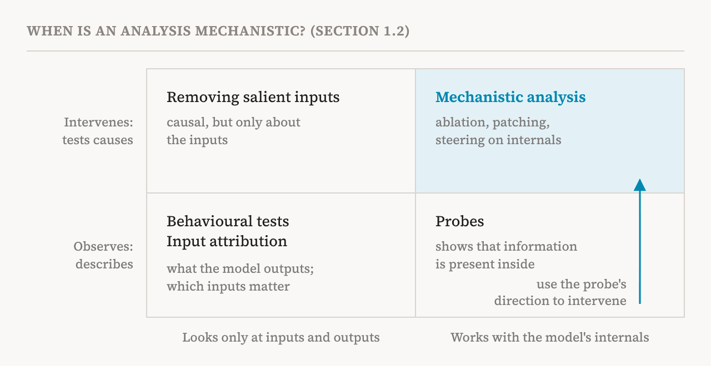
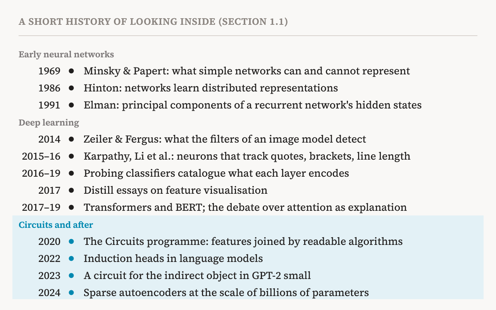

Here is an odd fact about modern AI. People design every part of how a model is trained: the architecture, the data, the goal it is scored against, the rule for updating it after each mistake. Nobody designs what the model ends up knowing. The book this series follows puts it in one line: we specify how models learn, but not what they learn.
Think of a teacher who writes the curriculum and the exams but is never allowed to read the student's notes. The teacher knows what went in and can see the test scores. What the student actually understood, and which shortcuts they took to pass, stays hidden. Interpretability is the effort to read those notes.
This series is a guided reading of one book on that effort. It goes through the book chapter by chapter and explains each idea in plain language, for anyone who wants to start studying the field. This first part covers the book's introduction: what the field is, where it came from, and what the book sets out to do.
The book
In November 2026, 27 researchers from Oxford, Mila, EleutherAI, Tel Aviv University and more than a dozen other institutions, Yoshua Bengio and Stella Biderman among them, published a 182-page work called “Understanding AI from the Inside: The State of Mechanistic Interpretability for AI Safety”. It calls itself a survey, but it is built like a textbook. It defines its terms in boxes, works through examples, warns about common mistakes, and comes with a set of code notebooks that reproduce key results. It is published under a CC BY 4.0 licence, so it is free to read and to build on.
The book is organised around one question: does understanding how models work actually make them safer? The authors point out that much of the field takes the answer for granted, and that this assumption has hardly been tested. So for every method it covers, the book asks two things. What does the method tell us about the model's internal computation? And what does it let us do, in practice, that we could not do without it?
The interpretability gap
AI capabilities have improved very quickly over the last decades. Methods for understanding how models produce those capabilities have improved much more slowly. The book calls the difference the interpretability gap: the distance between what models can do and what we understand about how they do it.
The gap matters for safety because most of today's safety measures work on behaviour. Safety-oriented reinforcement learning from human feedback (RLHF) rewards the answers people prefer. Red-teaming searches for inputs that make a model misbehave. Both look only at what goes in and what comes out. The book warns that they are not robust to subtler failures such as deceptive alignment, where a model behaves well because it is being watched rather than because it has learned to behave well.
As models grow, the book expects the gap may widen. Reasoning may appear that we cannot trace, deceptive behaviour may go unnoticed, and safety guarantees built on incomplete understanding may fail when we least expect it. Part 2 of this series looks at these limits of behavioural testing in detail.
What makes interpretability mechanistic
Interpretability, in the book's definition, is the effort to understand what models learn and why they behave as they do, rather than only observing what they output. Mechanistic interpretability (MI) is one approach within it. It studies the internal mechanisms of a network, the representations and computations inside it, and how they produce the network's behaviour.
The book is precise about what counts as mechanistic. An analysis has to meet two conditions. First, it has to engage with the model's internals: its intermediate representations, its components such as neurons, features and attention heads, or its learned parameters. Looking only at inputs and outputs is not enough. Second, it has to make causal claims. That means intervening on the model and watching what changes, not just noting that two things tend to appear together.
The difference is like the one between noticing that a lamp and a switch are on at the same time and flipping the switch to see whether the lamp goes off. The book names three common ways of flipping switches inside a model. Ablation removes a component's contribution. Patching replaces an activation with the one the model had on a different input. Steering pushes an activation in a chosen direction. Each of these is an experiment, and each can show that a part of the model causes a behaviour, not just that it accompanies it.

The line between describing and intervening is not a line between good and bad methods. Descriptive methods often find the targets that interventions later test. A probe, a small classifier trained to read some property from a model's activations, only shows that information is present. But once the direction a probe found is used to change the model and the change has the predicted effect, the analysis has become mechanistic. The book covers descriptive methods in depth when they feed this kind of causal work.
A short history
The term mechanistic interpretability is recent, but the questions are old. In 1969, Marvin Minsky and Seymour Papert studied which functions simple neural networks can and cannot represent, and their results contributed to a temporary decline of neural network research. In the 1980s, Geoffrey Hinton and colleagues showed that networks can learn distributed representations, in which a concept is spread across many units, and that individual units can still encode interpretable features. In 1991, Jeffrey Elman applied principal component analysis to the hidden states of a small recurrent network and followed their path as the network read a sentence word by word.
Modern work began almost as soon as deep learning started to work. In 2014, Matthew Zeiler and Rob Fergus visualised what the filters of the image model AlexNet had learned: early layers detected edges, and deeper layers responded to more and more complex patterns. In 2015 and 2016, Andrej Karpathy and others inspected the neurons of recurrent language models one by one and found neurons that tracked quotation marks, line length, brackets and negation. Nobody had asked the networks to learn these things. Interpretable structure had appeared on its own.
These early studies were mostly manual: researchers looked at neurons and reported what they saw. Between 2016 and 2019, probing classifiers made the search systematic, asking whether properties such as part of speech or sentence length could be read out of a layer. They produced a rich catalogue of what information is present in models. The book adds a caution that runs through the whole field: information being present does not mean the model uses it.
The transformer arrived in 2017 and BERT in 2019, and attention patterns gave researchers a new window. They also started a debate about whether attention weights really explain a model's decisions. From 2017, a series of visual essays in the journal Distill argued that neural networks contain meaningful, human-readable features. In 2020, Chris Olah and colleagues turned this into the Circuits programme, which treats a network as interpretable features connected by understandable algorithms. The book counts these efforts as the foundation of modern mechanistic interpretability.
The ideas then moved to language models: induction heads in 2022, a circuit for identifying the indirect object of a sentence in 2023, and studies of how small models do modular arithmetic and add whole numbers. By mid-2024, sparse autoencoders could pull features out of models with billions of parameters.

The book stresses that many of today's tools have long roots. Sparse autoencoders build on decades of work on sparse coding, going back at least to Bruno Olshausen and David Field in 1996. Circuit discovery in large language models echoes 1990s work that extracted finite-state machines from recurrent networks. Today's debates about attention-based explanations repeat earlier debates about saliency maps. Seeing these connections helps tell new ideas apart from old ideas applied to new models.
Why study it
The book gives three reasons. The first is safety. Much of the field hopes that understanding a model's insides will make it easier to detect and control dangerous behaviour. The book is careful here: it is not yet clear that today's mechanistic methods can handle the failures that behavioural and correlation-based methods miss. That is why it judges each method by the strength of what it lets us do, not only by how much understanding it gives.
The second is curiosity. Wanting to know how a complicated system works, such as the brain, is one of the oldest motives in science. Artificial networks are an unusual case. Unlike a brain, every internal state can be recorded exactly, and any part can be changed at will. Questions that are very hard to answer about brains can be tested directly.
The third is discovery. A model trained on a hard task such as chess or Go may find solutions its designers did not anticipate. Recovering the mechanism can bring that knowledge out, from the algorithm the model uses to the way it represents the task. In this sense, interpretability is a way to learn from a model, not only to audit and control it.
Two shifts in the field
The book sees two big changes in recent research. The first is a shift from manual to assisted analysis. Today's models are far too large to inspect neuron by neuron, so parts of the work are automated. Sparse autoencoders extract millions of features without supervision, pipelines search for candidate circuits, and language models write the first draft of what a feature means. Human judgement is still essential, but some automation has become unavoidable.
The second is a split in priorities, even among researchers who share safety as the goal. Some want safety interventions now, such as steering, monitoring and erasing concepts, without waiting for complete understanding. Others argue for complete causal understanding of a model's computation, even at great cost. Others study how models change during training rather than a single finished model, or try to get models to explain their own internals. The book does not pick a winner. It lays out what each direction assumes and where each can fail. Parts 31 to 33 of this series cover them.
What this book does differently
Other surveys of the field exist, and the book builds on them. What sets it apart is a set of choices. It asks what each method contributes to safety in practice, including whether the same task could be done just as well without interpretability. It explains methods by the problems that motivated them rather than listing them as a catalogue. It places them in their history.
It also tries to make the field's words precise. Basic terms such as concept and feature are used in different ways in different papers, and this hides real differences in what papers have shown. For example, showing that an intervention changes a behaviour is a much weaker claim than showing that you have precisely identified the mechanism behind it. For each method, the book states what it assumes about the model, what kind of claim it can support, and how strong that claim is.
Finally, it takes evaluation seriously. Many interpretability findings are accepted because they look plausible, not because they have passed a rigorous test. The book argues that better ways of evaluating interpretability claims, and better safety benchmarks, are the field's most pressing open problems. Part 20 of this series covers its proposal.
What the book covers, and what it doesn't
The book focuses on transformers, the architecture behind today's language models. In depth, it covers the foundations and core hypotheses of mechanistic interpretability, methods for extracting features, methods for finding and testing circuits, ways of reading the representations in the middle of a model, how mechanisms form during training, how to trace a behaviour back to training data, six directions research is taking, and applications to safety.
Some topics are discussed only briefly: behavioural evaluation such as benchmarks and red-teaming, input attribution methods such as SHAP and saliency maps, concept bottleneck models, and the theory of causal abstraction. Training data attribution does not meet the two conditions above, since it explains behaviour by data rather than by internal computation, but the book includes it because researchers increasingly combine it with mechanistic analysis.
How this series works
The series follows the book's order, with a few small changes. It explains how a transformer computes before it talks about neurons and features, so that newcomers know what is being looked at, and it gathers the book's three looks at induction heads into one part. There are 38 parts in eight groups.
| Group | Parts | What it covers |
|---|---|---|
| Why look inside | 1–3 | The goal of the field, the limits of behavioural tests, the families of methods |
| Foundations and hypotheses | 4–9 | Transformers, features, circuits, and the hypotheses behind the methods |
| Finding features | 10–15 | Sparse autoencoders and their relatives, and models built to be read |
| Finding and testing circuits | 16–20 | Circuit discovery, causal checks, and how to grade a claim |
| Reading the middle of a model | 21–25 | Lenses, self-explanation, probes, comparing models, steering |
| Training and data | 26–30 | How mechanisms form during training, and which data taught what |
| Research directions | 31–33 | Six orientations, introspection, automation |
| From understanding to safety | 34–38 | Editing, steering and monitoring, risks, open problems |
Each part names the pages of the book it covers, so you can read the original alongside it. Where the book has a companion notebook, the part links to it in its references. Formulas are explained in words. When a part adds background that is not in the book, it says so. Every part ends with a short table of the terms it introduced.
| Term | Meaning |
|---|---|
| Interpretability | The effort to understand what a model has learned and why it behaves as it does, beyond its outputs |
| Mechanistic interpretability (MI) | Interpretability that works with a model's internals and tests causes by intervening on them |
| Interpretability gap | The distance between what models can do and what we understand about how they do it |
| Intervention | Changing something inside a model on purpose and measuring what changes in its behaviour |
| Ablation | An intervention that removes a component's contribution |
| Patching | An intervention that swaps in an activation the model had on a different input |
| Steering | An intervention that pushes an activation in a chosen direction |
| Probe | A small classifier trained to read a property out of a model's activations |
Next, part 2 asks why testing a model's behaviour, however carefully, can leave us blind to what matters most.